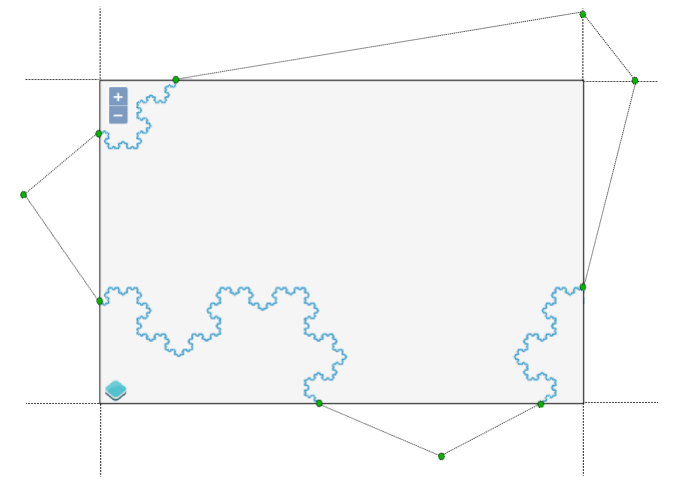
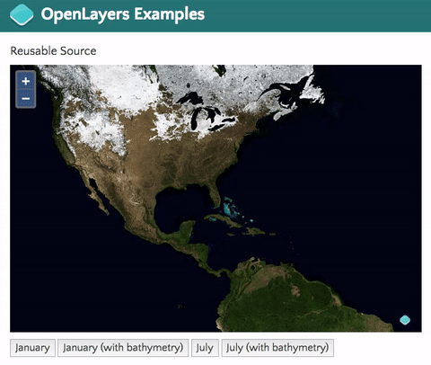
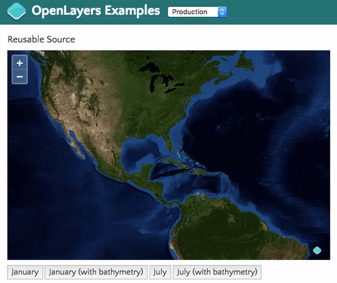

What's new and cool in OpenLayers
Andreas Hocevar / @ahoce
Marc Jansen / @selectoid
FOSS4G 2016
Outline
- (somewhat boring) meta (short)
- What's new and cool in OpenLayers?
- What's new and cool in OpenLayers?
- What's new and cool in OpenLayers?
- What's next?
(somewhat boring)
meta
(short)
Andreas Hocevar

- OpenLayers core developer and steering committee member
- Consultant for Boundless
Boundless
- boundlessgeo.com
- Active leader in the open source community
- Has developed and supported powerful software for enterprise GIS applications since 2002
Marc Jansen


- Since 2007 developer and project lead @ terrestris
- Core developer / PSC member GeoExt
- Core developer OpenLayers
- Author "OpenLayers" (German)
- Speaker & workshop instructor
national & international - OSGeo Foundation Charter Member
terrestris
- terrestris.de
- Top-notch OpenSource GIS from Bonn, Germany
- Development, projects, support & teaching
- Consulting, implementation, planing & maintenance
What is OpenLayers?
What is OpenLayers?
A high-performance, feature-packed library for all your mapping needs.
- OpenSource (BSD)
- JavaScript
- OSGeo project
OpenLayers
- …long history
- v2.0.0, August 2006
- v3.0.0, August 2014
- v3.17.1, July 2016
- actively developed & big community
- well documented & huge examples collection
- usable & used everywhere
What is cool?
…things we have to mention:
- Many data sources & layer types
- Interactions & controls
- Works 100% on mobile devices
- Retina/HiDPI support out of the box
Rotation
Projections
Vector rendering tricks
Vector styling
Raster operations
What is new?
Top 8 contributors since v3.9.0
- 4 different companies
- 2 individual contributors
- 7 different countries
- 1 bot
| v3.9.0 | |
|
v3.18.0 |
What is new?
Raster reprojection
Vector tiles
Render geometries anywhere
Rotate geometries
var geom = ol.geom.Polygon.fromExtent([-5, -5, 5, 5]);
geom.rotate(Math.PI / 4);
CartoDB tile source
new ol.source.CartoDB({
account: 'myaccount',
config: {
'layers': [{
'type': 'cartodb',
'options': {
'cartocss_version': '2.1.1',
'cartocss': '#layer { polygon-fill: #F00; }',
'sql': 'select * from european_countries_e where area > 50000'
}
}]
}
});
Image ArcGISRest source
new ol.source.ImageArcGISRest({
url: 'http://sampleserver1.arcgisonline.com/ArcGIS/rest/services/Specialty/ESRI_StateCityHighway_USA/MapServer'
});
OGC filters for WFS
new ol.format.WFS().writeGetFeature({
srsName: 'EPSG:3857',
featureNS: 'http://openstreemap.org',
featurePrefix: 'osm',
featureTypes: ['water_areas'],
outputFormat: 'application/json',
filter: ol.format.ogc.filter.and(
ol.format.ogc.filter.like('name', 'Mississippi*'),
ol.format.ogc.filter.equalTo('waterway', 'riverbank')
)
});
Other improvements...
|  |  |
Library size
September 2015: 143 kB gzipped, minified from 3.8 MB
August 2016: 140 kB gzipped, minified from 2.9 MB


September 2015
Our users want mainstream build tools and bundlers. Let's remove the dependency on Closure Library!
Existing Closure Compiler workflows won't break.
August 2016
Closure Library removal is 98% complete.
- Lightweight event system, matrix transforms and class inheritance.
- No more legacy code for outdated browsers.
- JavaScript as it was meant to be 👻.
What is next?
var OLMap = require('openlayers/map');
var View = require('openlayers/view');
var TileLayer = require('openlayers/layer/tile');
var OSM = new require('openlayers/source/osm');
var map = new OLMap({
target: 'map',
layers: [new TileLayer({
source: OSM
})],
view: new View({
center: require('ol/proj').fromLonLat([7.0936, 50.7362]),
zoom: 2
})
});
Thank you
Questions & comments?
Imprint
Authors
Andreas Hocevar
Boundless Spatial
ahocevar@boundlessgeo.com
Boundless Spatial
ahocevar@boundlessgeo.com
Marc Jansen
terrestris GmbH & Co. KG
Kölnstr. 99, 53111 Bonn
Germany
jansen@terrestris.de
terrestris GmbH & Co. KG
Kölnstr. 99, 53111 Bonn
Germany
jansen@terrestris.de
License
The slides of this talk are licensed under CC BY-SA.